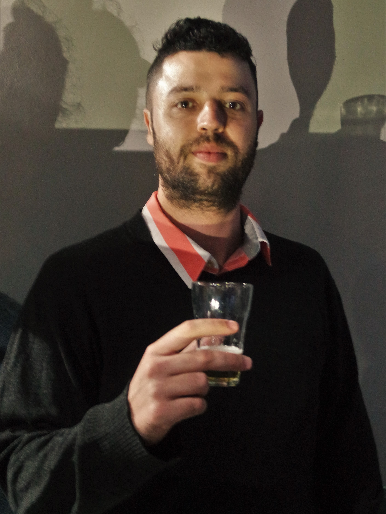
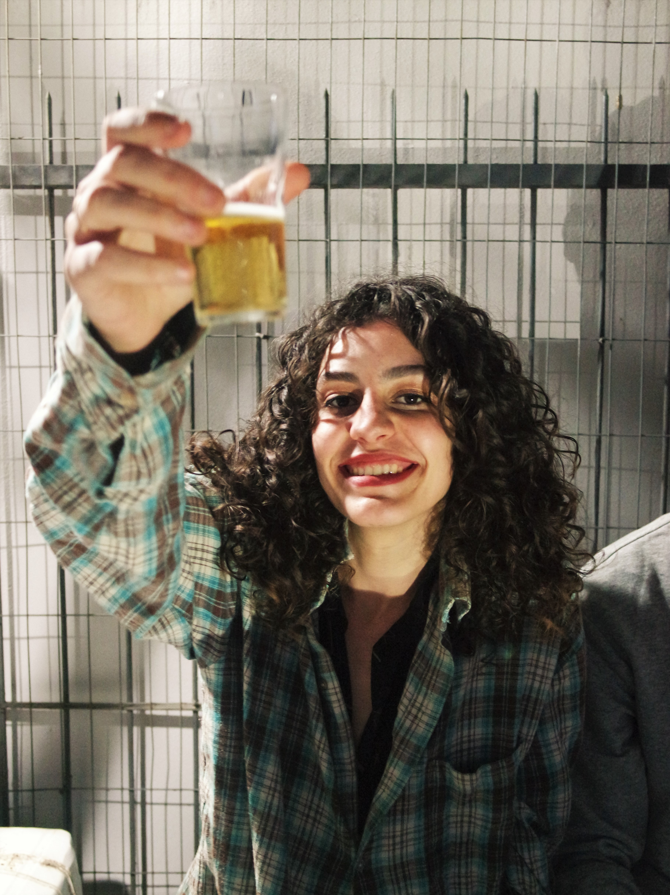
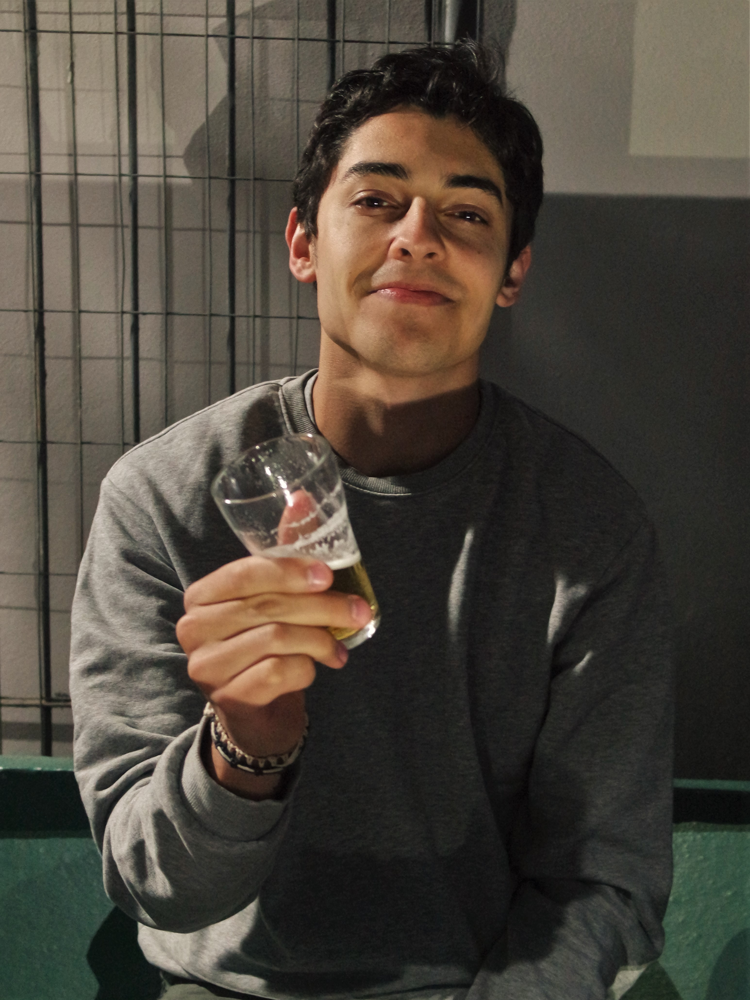
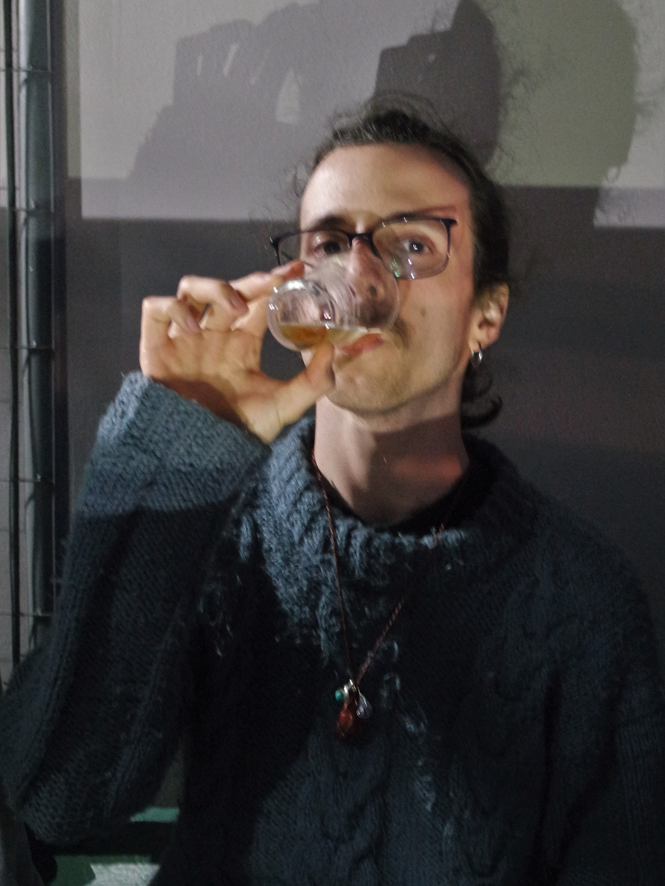

BATUCA NA BITUCA
Batuca na Bituca é uma banda de indie rock brasileiro formada em 2017 que possui na sua trajetória dois EPs e 2 Singles lançados. Formada no interior do Rio grande do Sul, o grupo tem como objetivo relatar o cotidiano, angústias e perspectivas dos integrantes através da música, sempre buscando a mistura de diversos ritmos e estilos que os músicos trazem consigo.
A sonoridade da banda está sempre em constante transformação, geralmente acompanhada de ritmos brasileiros como o samba, a bossa nova e a música nativista, bem como o indie rock brasileiro e internacional, buscando a voz de uma geração da qual as fronteiras da música são praticamente inexistentes.
A BANDA

//Lucas Nunes
Guitarra
Vocal

//Julia Tavares
Percussão
Vocal

//Lucas Almeida
Guitarra
Vocal

//Poejo
Baixo
MÍDIA
CONTATO
Entre em contato conosco através do Facebook em /batucanabituca, ou no email batucanabituca@gmail.com.